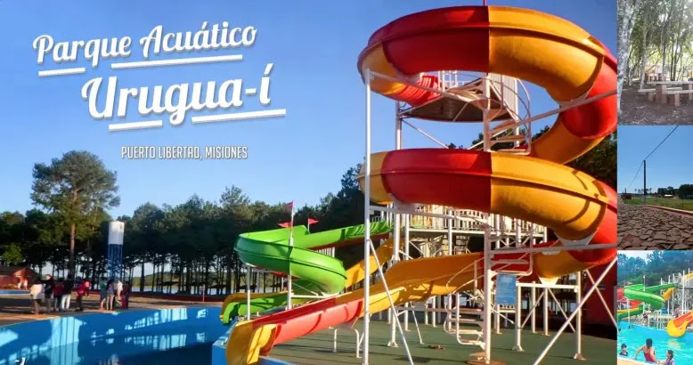
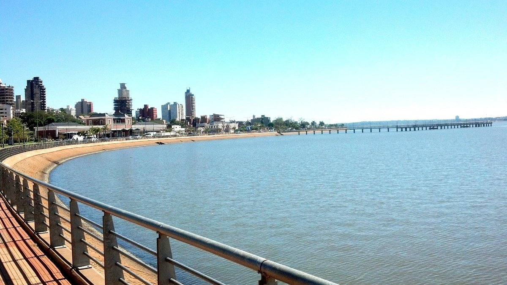
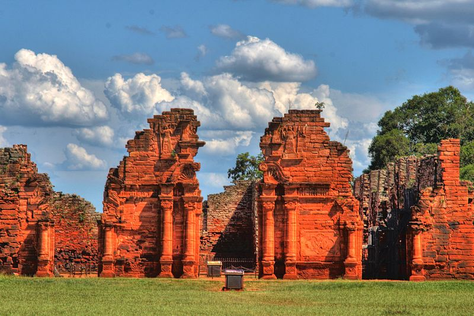
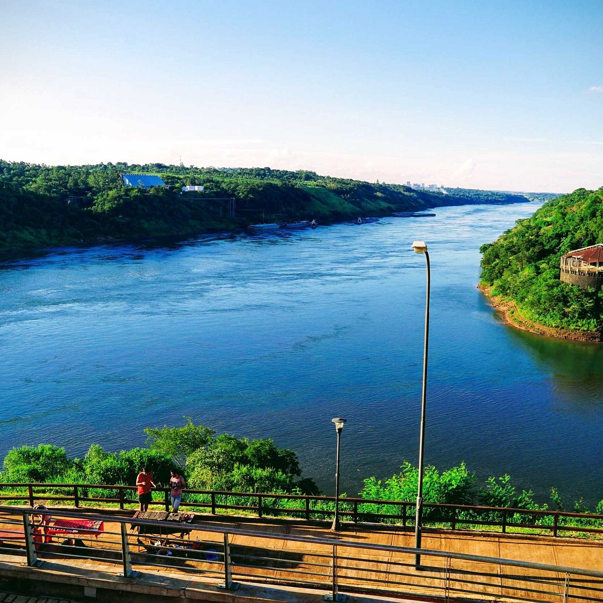

El "Hotel & Cabañas Arami", se encuentra ubicado estratégicamente. Nos encontramos a pocos kilometros de una de las maravillas del mundo: Las cataras del Iguazú. Además, como provincia netamente turística contamos con otros lugares bellisimos que tenés que visitar, no te lo podés perder. A continuación te detallamos la distancia desde el "H&C Arami" y esos puntos turísticos. En sintesis, podes disfrutar de una estadia totalmente placentera en nuestro Hotel, combinando con tu visita a otros lugares hermosos de misiones:
Parque Acuático Urugua-í: se encuentra ubicado en la localidad de Puerto Libertad, sobre la Ruta Nacional N°12.
Costanera Posadas: se encuentra ubica en la capital de la provincia, a 264 km de la localidad de Puerto Libertad.
Ruinas San Ignacio: se encuentra ubicada a 200 km de la localidad de Puerto Libertad.
Triple frontera: entre Brasil, Paraguay y Argentina. Este punto turístico se encuentra ubicado a 45 km de la localidad de Puerto Libertad.
